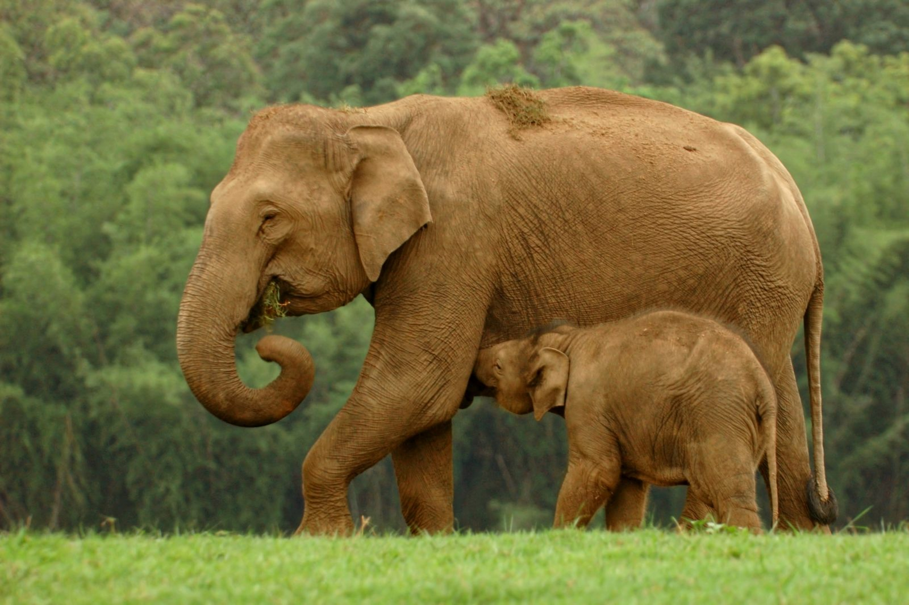

Travel Stories: Edition 2
Animal Kingdom! Fun at Bandipur!
Animal Kingdom is a great and unique collection of wildlife photos from Bandipur National Park and Nagarhole reserved forest in Karnataka. This state has one of the highest populations of tigers but we didn't see any of them.
One long weekend, we just decided that we need to unplug and go to a forest and enjoy adjusting exposures and focus to click some beautiful shots of some absolutely menacing creatures.
"Planes are fun, the noise, the adrenaline rush, everything about them is fun!"
The faint sunlight was filtered through dense clouds. A slight nip in air started to culminate into cool wind. Our jeep engines hummed to life and we were set to explore wilderness and track serendipitous movements of wildlife. With hopes in our heart and curious eyes, we entered the dense and lush green forest of Bandipur National Park. The clock struck 4 pm as we gradually ventured in the denser parts of forest. Curious antelopes and spotted deer stared at us as we scanned the mud roads for tiger footprints and tree tops for evening birds. Our evening safari in Bandipur National park had started!
We saw a pair of mongoose cross our way and it halted our journey. The mongoose had a faint hint of red color, dominated by deep shades of brown. Unperturbed by our presence, they continued sniffing the earth for something to nibble on. Mongoose mostly stayed with a partner and roamed around in a pair. We discovered a mongoose to have found a deer carcass and it started feeding on it nonchalantly.
Our evening Safari ended at a high note. We witnessed a herd of deer giving frantic calls. These calls clearly indicate presence of a predator nearby. We waited for 20 minutes but, didn’t see any. But, the 3 hours spent in forest during safari was a lovely time spent with nature in it’s purest form.

The highlight of our morning safari was spotting a monitor lizard. It looked pretty slick and it’s skin was glowing in sunshine! Flicking it’s forked tongue frequently, it slowly eloped in the bushes. The reptile family is known for flicking tongue frequently which helps them to scan the surrounding air through sensory organs located on the roof of mouth. They rapidly scan the air and slide away in search for a prospective prey. A monitor lizard grows to up to 4 feet! The one which we saw was around 2.5 feet. We also saw a cute little brown hare hopping around in the bushes.